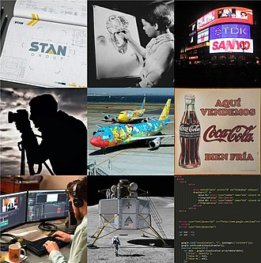

Graphic design is a profession, [2] academic discipline[3][4][5] and applied art whose activity consists in projecting visual communications intended to transmit specific messages to social groups, with specific objectives.[6] Graphic design is an interdisciplinary branch of design[1] and of the fine arts. Its practice involves creativity, innovation and lateral thinking using manual or digital tools, where it is usual to use text and graphics to communicate visually.
The role of the graphic designer in the communication process is that of encoder or interpreter of the message. They work on the interpretation, ordering, and presentation of visual messages. Usually, graphic design uses the aesthetics of typography and the compositional arrangement of the text, ornamentation, and imagery to convey ideas, feelings, and attitudes beyond what language alone expresses. The design work can be based on a customer's demand, a demand that ends up being established linguistically, either orally or in writing, that is, that graphic design transforms a linguistic message into a graphic manifestation.[7]
Graphic design has, as a field of application,
different areas of knowledge focused on any visual
communication system. For example, it can be
applied in advertising strategies, or it can also
be applied in the aviation world[8] or space
exploration.
With origins in Antiquity and the Middle Ages, [11]graphic design as applied art was initially linked to the boom of rise of printing in Europe in the 15th century and the growth of consumer culture in the Industrial Revolution. From there it emerged as a distinct profession in the West, closely associated with advertising in the 19th century[12] and its evolution allowed its consolidation in the 20th century. Given the rapid and massive growth in information exchange today, the demand for experienced designers is greater than ever, particularly because of the development of new technologies and the need to pay attention to human factors beyond the competence of the engineers who develop them. [13]
William Addison Dwiggins is often credited with first using the term "graphic design" in a 1922 article,[14] although it appears in a 4 July 1908 issue (volume 9, number 27) of Organized Labor, a publication of the Labor Unions of San Francisco, in an article about technical education for printers:[15]
An Enterprising Trades Union … The admittedly high standard of intelligence which prevails among printers is an assurance that with the elemental principles of design at their finger ends many of them will grow in knowledge and develop into specialists in graphic design and decorating. …
A decade later, the 1917–1918 course catalog of the California School of Arts & Crafts advertised a course titled Graphic Design and Lettering, which replaced one called Advanced Design and Lettering. Both classes were taught by Frederick Meyer. [16]
In both its lengthy history and in the relatively recent explosion of visual communication in the 20th and 21st centuries, the distinction between advertising, art, graphic design and fine art has disappeared. They share many elements, theories, principles, practices, languages and sometimes the same benefactor or client. In advertising, the ultimate objective is the sale of goods and services. In graphic design, "the essence is to give order to information, form to ideas, expression, and feeling to artifacts that document the human experience."[17]
The definition of the graphic designer profession is relatively recent concerning its preparation, activity, and objectives. Although there is no consensus on an exact date when graphic design emerged, some date it back to the Interwar period. Others understand that it began to be identified as such by the late 19th century.[11]
In China, during the Tang dynasty (618–907) wood blocks were cut to print on textiles and later to reproduce Buddhist texts. A Buddhist scripture printed in 868 is the earliest known printed book. Beginning in the 11th century in China, longer scrolls and books were produced using movable type printing, making books widely available during the Song dynasty (960–1279).[19]
In 1849, Henry Cole became one of the major forces in design education in Great Britain, informing the government of the importance of design in his Journal of Design and Manufactures. He organized the Great Exhibition as a celebration of modern industrial technology and Victorian design.
In 1917, Frederick H. Meyer, director and instructor at the California School of Arts and Crafts, taught a class entitled "Graphic Design and Lettering".[26] Raffe's Graphic Design, published in 1927, was the first book to use "Graphic Design" in its title.[27] In 1936, author and graphic designer Leon Friend published his book titled "Graphic Design" and it is known to be the first piece of literature to cover the topic extensively.[28]
The professional graphic design industry grew in parallel with consumerism. This raised concerns and criticisms, notably from within the graphic design community with the First Things First manifesto. First launched by Ken Garland in 1964, it was re-published as the First Things First 2000 manifesto in 1999 in the magazine Emigre 51 [34] stating "We propose a reversal of priorities in favor of more useful, lasting and democratic forms of communication – a mindshift away from product marketing and toward the exploration and production of a new kind of meaning. The scope of debate is shrinking; it must expand. Consumerism is running uncontested; it must be challenged by other perspectives expressed, in part, through the visual languages and resources of design."[35]
Graphic design can have many applications, from road signs to technical schematics and reference manuals. It is often used in branding products and elements of company identity such as logos, colors, packaging, labelling and text.
From scientific journals to news reporting, the presentation of opinion and facts is often improved with graphics and thoughtful compositions of visual information – known as information design. With the advent of the web, information designers with experience in interactive tools are increasingly used to illustrate the background to news stories. Information design can include Data and information visualization, which involves using programs to interpret and form data into a visually compelling presentation, and can be tied in with information graphics.
A graphic design project may involve the creative presentation of existing text, ornament, and images.
The "process school" is concerned with communication; it highlights the channels and media through which messages are transmitted and by which senders and receivers encode and decode these messages. The semiotic school treats a message as a construction of signs which through interaction with receivers, produces meaning; communication as an agent.[citation needed]
Typography includes type design, modifying type glyphs and arranging type. Type glyphs (characters) are created and modified using illustration techniques. Type arrangement is the selection of typefaces, point size, tracking (the space between all characters used), kerning (the space between two specific characters) and leading (line spacing).
Page layout deals with the arrangement of elements (content) on a page, such as image placement, text layout and style. Page design has always been a consideration in printed material and more recently extended to displays such as web pages. Elements typically consist of type (text), images (pictures), and (with print media) occasionally place-holder graphics such as a dieline for elements that are not printed with ink such as die/laser cutting, foil stamping or blind embossing.
A grid serves as a method of arranging both space and information, allowing the reader to easily comprehend the overall project. Furthermore, a grid functions as a container for information and a means of establishing and maintaining order. Despite grids being utilized for centuries, many graphic designers associate them with Swiss design. The desire for order in the 1940s resulted in a highly systematic approach to visualizing information. However, grids were later regarded as tedious and uninteresting, earning the label of "designersaur." Today, grids are once again considered crucial tools for professionals, whether they are novices or veterans. [37]